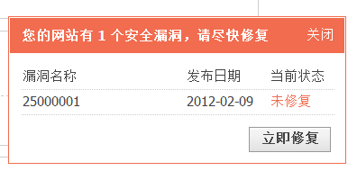

安全中心
安全中心免去了站长手工更新补丁的烦恼，从而让站长把更多的精力投入到网站运营之中。
应用场景
长久以来，站长们要么因为安全意识不强，要么因为忙着运营网站，而常常忘记给网站打上安全补丁，从而遭遇黑客攻击。一位站长在受到黑客攻击时说：“做网站要专心在运营上，哪有那么多时间盯着Discuz!官方论坛，升级安全补丁呢？”
用户需求
站长希望能够更加方便、简单的升级安全补丁，只要有新的安全补丁发布，站长就能在前台看到提示，然后点几下鼠标在后台完成打补丁的过程。就像是 Windows update 一样，操作简单，使用方便，从些不必让站长为网站安全补丁操心，可以一心一意运营网站。
设计理念
让安全补丁像 Windows update 一样自动升级，方便简单。
功能使用
1、每次有新的安全补丁发布，站长在论坛前台都可以看到更新提示。如下图所示：
2、站长只要点击“立即修复”即可跳转到后台=>站长=>安全中心中修复补丁。
这里列出了以前打过的补丁和当前需要打的补丁。站长选中需要升级的补丁列表，点击“修复”按钮，可一键自动安装。
3、更新设置
更新设置中可以开启/关闭自动更新、设置手机短信及时通知等功能。
是否开启自动更新：选择“是”则系统会自动更新安全补丁，选择“否”系统会提示站长需要更新的安全补丁。
有安全补丁时通过手机短信及时通知： 填写接收短信的手机号码，这样如果官方有安全补丁发布后会及时给您的手机发送短信。
有安全补丁时通过QQ及时通知：填写接收通知的QQ号码，当有安全补丁需要您更新时，会及时发送到您的QQ上。
有安全补丁时通过电子邮件及时通知：填写接收安全补丁通知的电子邮箱，当有安全补丁需要您更新时，会及时给您发送电子邮件。